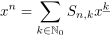
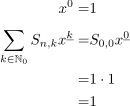
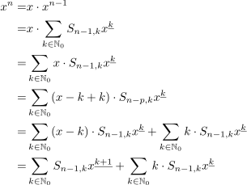
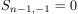
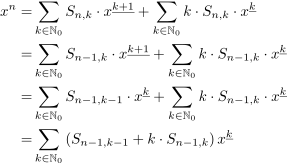
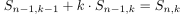
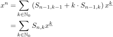

Potenz als Summe von Stirling Zahlen zweiter Art und fallender Faktorielle
1. Satz
Sei  und
und  , so gilt:
, so gilt:

1
2. Beweis
2.1. IA

2
2.2. IS

3
Da  gilt, folgt durch Indexverschiebung:

4
Nach der Rekursionsformel für die Stirling Zahl zweiter Art gilt  Daraus folgt dann:

5